| 日付 | 2012年10月13日（土） |
|---|---|
| 山域 | 日光周辺 |
| メンバー | 家族（妻、長女・1歳） |
| 山行形態 | 子連れ日帰り |
| アクセス | 車、バス |
| ルート (Map) | 霧降の滝入口 (7:50) - (8:19) 丸太橋 - (10:28) 大山 (11:04) - (12:22) 霧降高原 |
大山と言えば丹沢の大山や鳥取の伯耆大山が有名だが、
今回訪れた大山は日光にあるマイナーな大山である。
女峰山の東麓にある小さな山で、大山という名前は似つかわしくない。
山頂に牧場が広がる展望の良い山ということで
晴天の日を選んで行ってみることにする。
霧降の滝駐車場に到着。標高760m。
有名な観光地なのだが、まだ7時半のため辺りに人影はない。
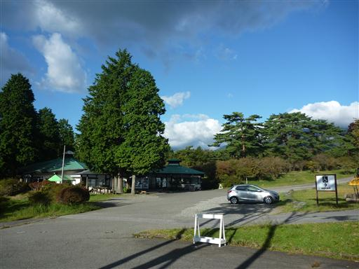
大山に向かう前に、まず霧降の滝を見学することにする。

滝まで遊歩道を5分程度歩く。
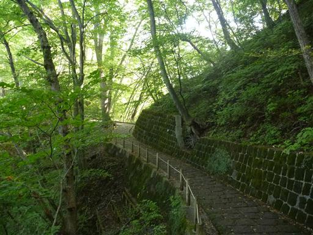
観瀑台に到着。ここも人がいないため、ゆっくりと滝見学ができる。
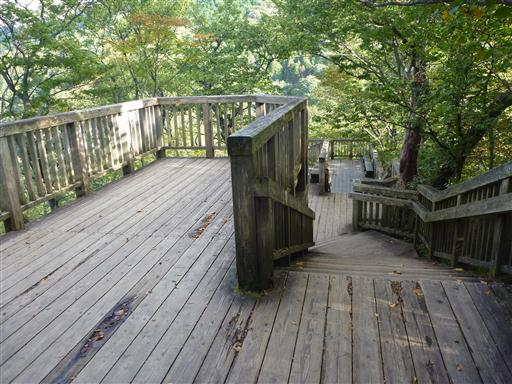
眼下に霧降の滝を見下ろす。上段25m、下段26mの立派な滝なのだが、いかんせん遠すぎる。
滝壺まで降りる道があったらしいが通行止めになって久しい。
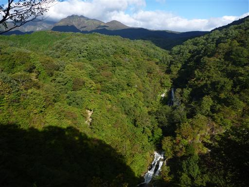
下段の滝は幅が広く、水の流れが非常に美しい。
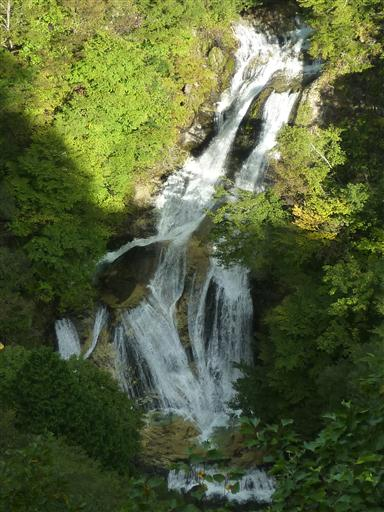
滝見学を終えたら駐車場まで戻り、大山方面に歩を進める。
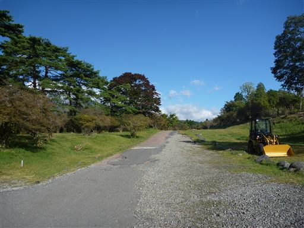
明るく開けた道を数分歩くと大山登山口に到着する。
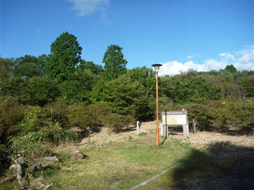
人通りは少なそうな場所なのだが、道は案外しっかりしている。
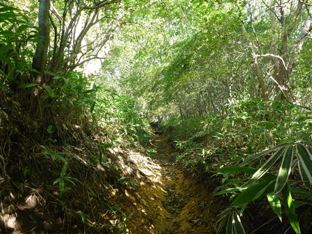
土がえぐれて、木段が障害物と化している。
丸太の上は滑りやすいので非常に歩きにくい。
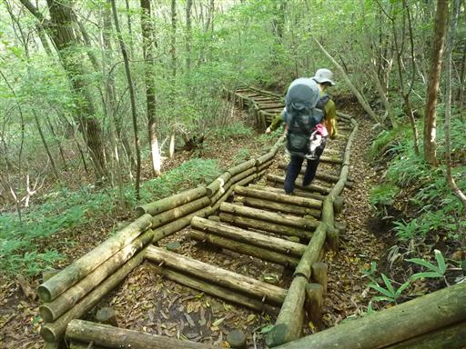
霧降川の川岸に到着する。ここは霧降の滝の上流部分だ。
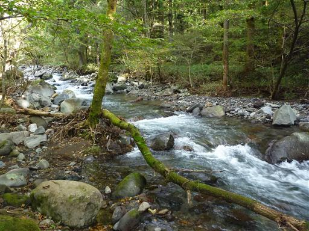
川を渡る橋は流されてしまっていて渡れない。
飛び石伝いに渡れる場所も見当たらなかったため、
仕方なく流れの穏やかそうなところを選んで靴を脱いで渡渉する。
水量の少ない時期だが、それでも水深は膝上くらいだ。
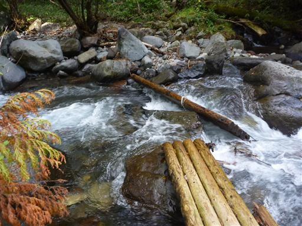
玉簾の滝。水が簾のように流れ落ちることから名づけられた。
付近には立派な観瀑台まで用意されている。
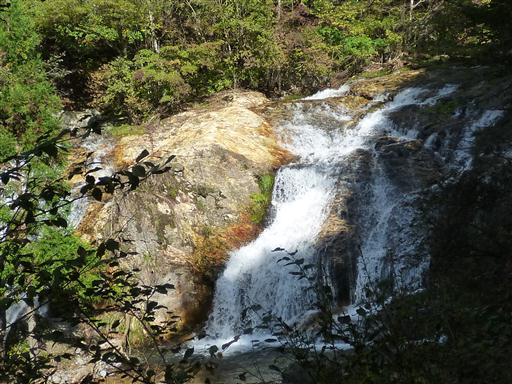
この辺りの川床は赤っぽい岩盤でできている。
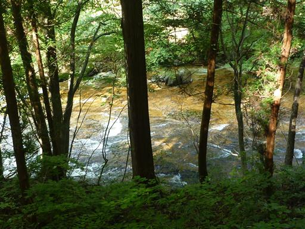
笹薮が少々うるさい道を登っていく。
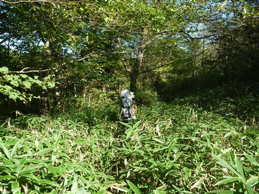
途中で少し寄り道してマックラ滝を見に行くことにする。
こちらの橋は少々傾いているものの一応渡ることができる。
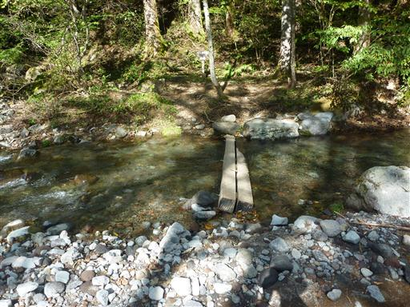
マックラ滝に到着。変わった名前の滝だがなかなか立派だ。
このマックラ滝と玉簾の滝と、行かずにスキップした丁字の滝は
霧降隠れ三滝と呼ばれているらしい。
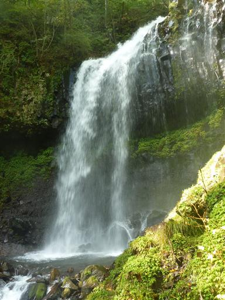
滝を見守るように大きな木が立っている。
滝からは大量の水煙が立ち昇っている。
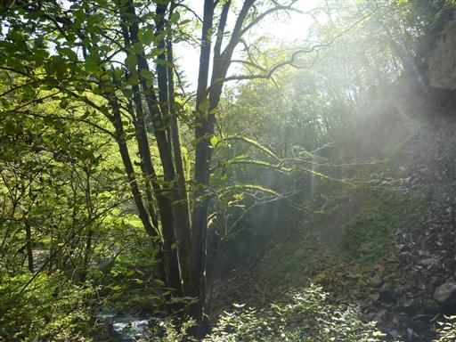
滝を離れ斜面を登っていくと、柵を越えるための階段が現れる。
この階段はいくつか現れるが、すでに柵が壊れてしまっている所も多い。
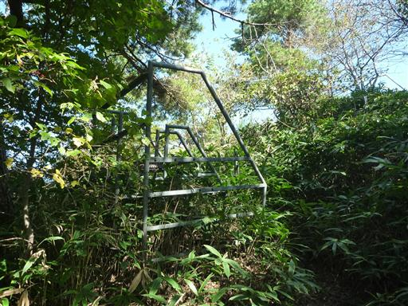
いくつかの柵を超えると牧場に到着し、視界が大きく広がる。
この辺りは猫ノ平と名付けられている。
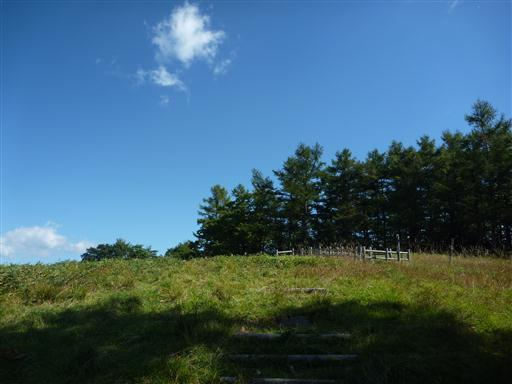
目の前に大きく聳えるのは女峰山。日光で一番好きな山だ。
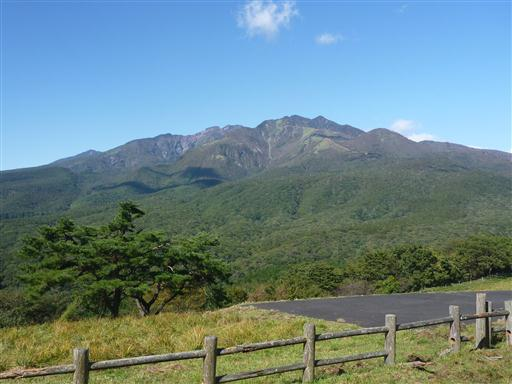
その左には男体山の頭が見えている。
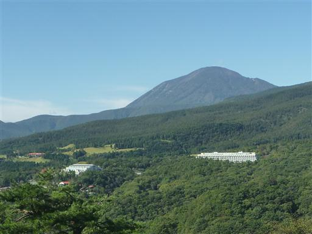
こちらは薬師岳～夕日岳。ツツジが満開の時期にかつて歩いた稜線だ。
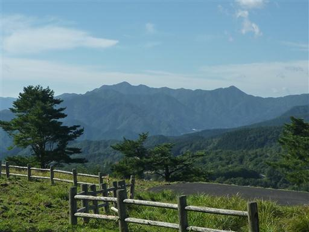
のどかな風景が広がる牧場内を歩いていく。
遠くの車道でキツネらしき生き物を見かけるが、写真を撮る前にどこかへ行ってしまった。
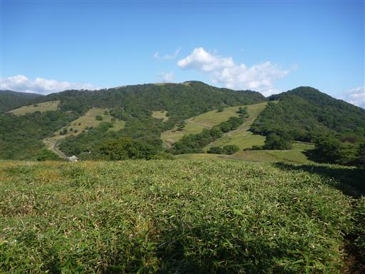
立派な柵が現れる。太い人お断りのなかなか挑戦的なゲートだ。
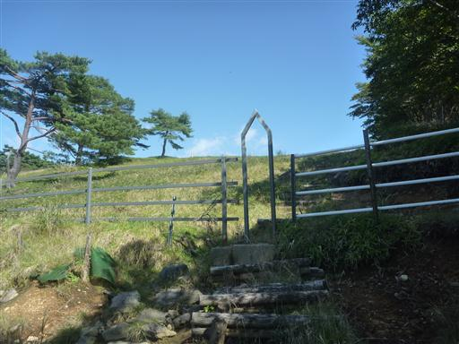
本日は快晴で見事な青空。
のんびり昼寝をしたくなるような場所だが、山頂での昼食を目指して歩き続ける。
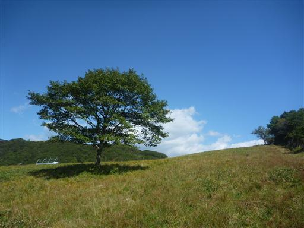
牧場内の歩道は途中で車道と合流し、ここからは車道を歩いていく。
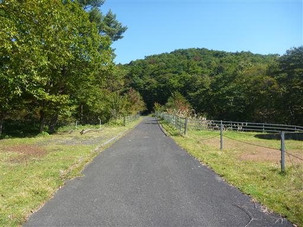
目の前に広がる展望は素晴らしい。遥か遠くには微かに筑波山が見えている。
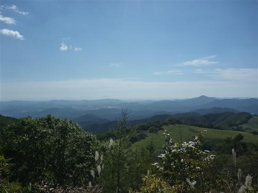
再び挑戦的なゲートを通り抜けて登山道に入っていく。
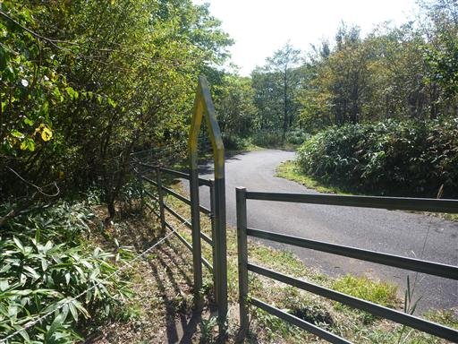
足元にはリンドウの花が咲いている。
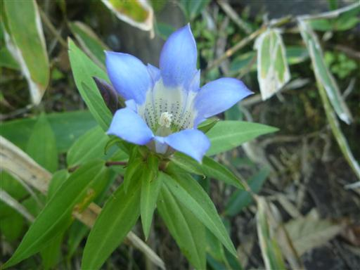
大山山頂に到着。標高1158m。
文字が消えかかっているお粗末な山頂標識が立っている。
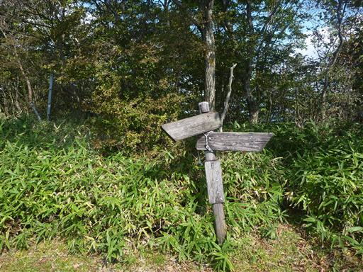
山頂には東屋がある。目の前に広がるのは巨大な女峰山だ。
山頂は無人で、ここまで登山者とは一人も出会っていない。静かな山だ。
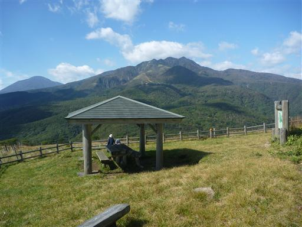
山頂から下る道は見つけにくい。草の中に木の階段が見え隠れしている。

女峰山に向かって牧場をまっすぐ下って行く。とにかく風が強くて歩きにくい。
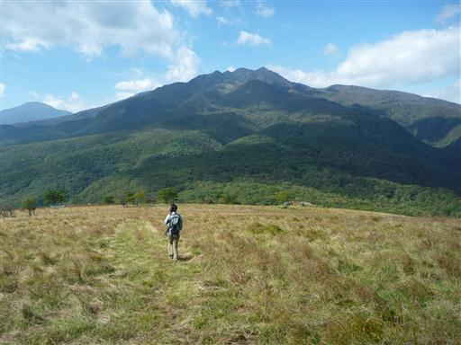
牧場を過ぎると樹林帯の中に入り、ようやく風が収まる。
この辺りで猪の狩猟をしている一行と出会う。山に入ってから人と出会うのは初めてだ。
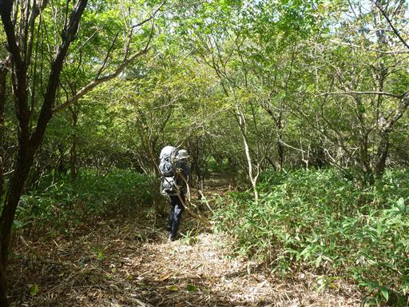
合柄橋に到着。
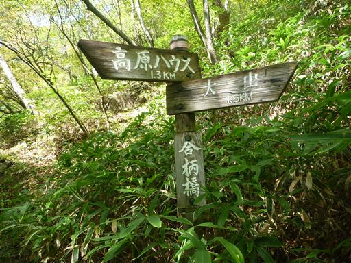
小さな沢があるが、橋は見当たらない。

沢を渡ると登りに転じる。途中1ヵ所、登山道が崩壊している場所がある。
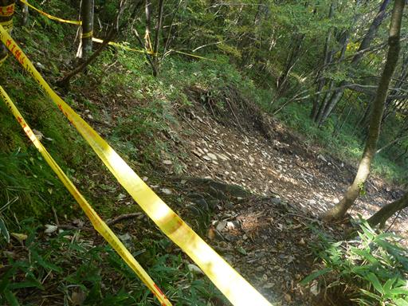
坂を登りきると車道に到着する。車道を潜るトンネルの先にも登山道が続いているが、
側の案内に工事中と書かれていたため、ここからは車道を歩くことにする。
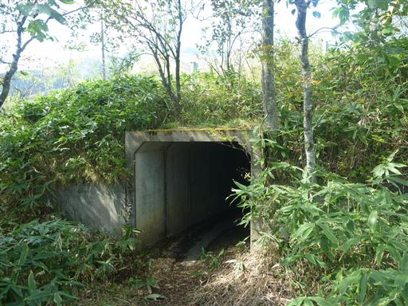
緩やかな登りの広い車道を歩いていく。目の前に見える山は丸山だ。
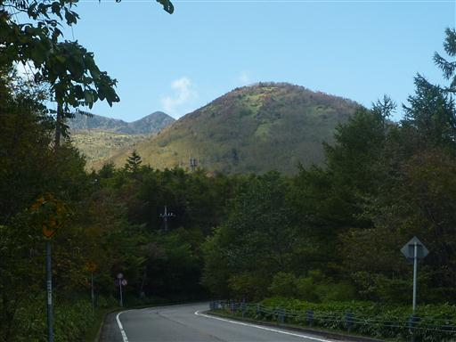
車道からは素晴らしい展望が広がる。
高原山など大山からは見えなかった東側の展望が広がる。
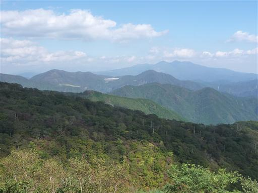
眼下には大山の牧場が見えている。下山地点（？）の標高はなんと大山山頂より高い。
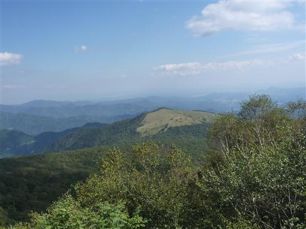
霧降高原バス停に到着。標高1340m。
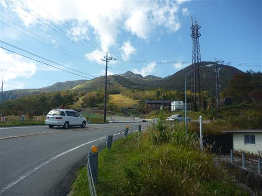
紅葉の時期なのに霧降高原の駐車場は閑散としている。
ここから霧降の滝までバスで戻る予定で、事前にネットで時刻表を調べて来たのだが
その情報が間違っていたため、ここで1時間以上待たされることになってしまった。
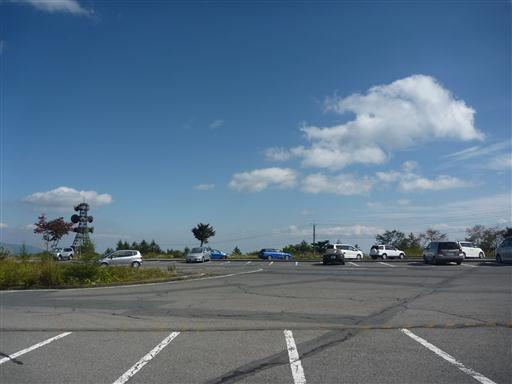
ようやくやって来たバスに乗って霧降の滝駐車場まで戻ってくる。
朝は閑散としていたが、この時間だとそれなりに人は多い。
最後はトラブルがあったが、美しい滝と山頂からの展望を望める静かな山行だった。
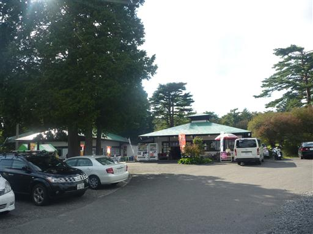